Installing MySQL (Windows, Linux and Mac)
Last updated on July 27, 2020
MySQL is one of the most used Relational databases on the Web and in this lesson, we will learn how to install it.
This post specifically covers how to install MySQL on Windows, Linux and Mac OS.
Installing MySQL on Windows #
To download MySQL for Windows navigate to https://dev.mysql.com/downloads/windows/installer/. Scroll down a little and you will be displayed download links like this:
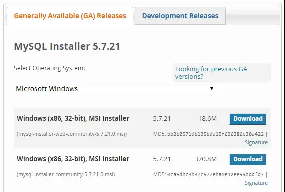
The first one is a web installer and the second one is an offline installer. Select whichever you like and hit the Download button.
After the download finishes double-click to start the installer.
Step 1: Accepts Licence Agreement.
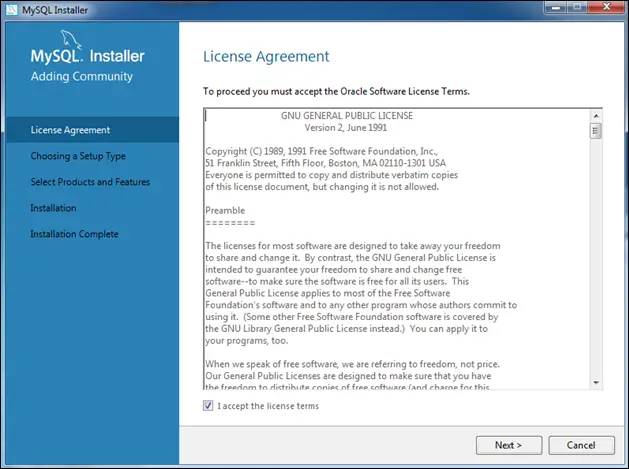
Step 2: Select Setup Type.
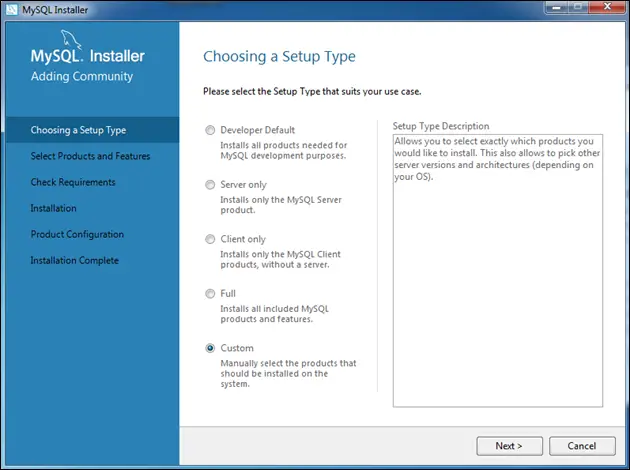
The default set up installs many additional packages like MySQL workbench, Connectors, plugins, documentation, samples databases and so on. Installing all these packages will take some time and additional space. And the worst part is you won't even use half of these packages. That's why it is better to go with the Custom Installation and only install the packages you need. Don't worry you can always install these packages later by running installer again.
Step 3: Select Product and Features.
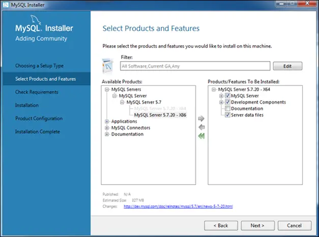
In this case, we are only interested in installing MySQL server. Select architecture ( x86 or x64 ) depending upon your OS and click Next.
Step 4: Check Requirements.
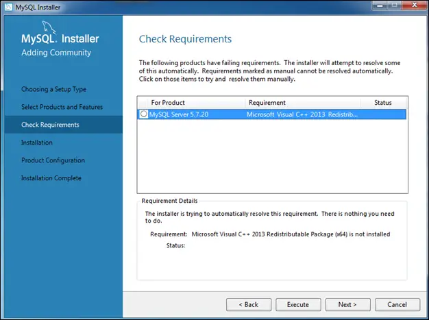
In this screen, the installer will download the missing dependencies. You will see this screen only when your system has missing dependencies. Click the "Execute" button to start the process. As you can see, on this system, installers need Microsoft Visual C++ Redistributable Package before it can proceed. Click the Next button and installer will prompt you to install the necessary package.
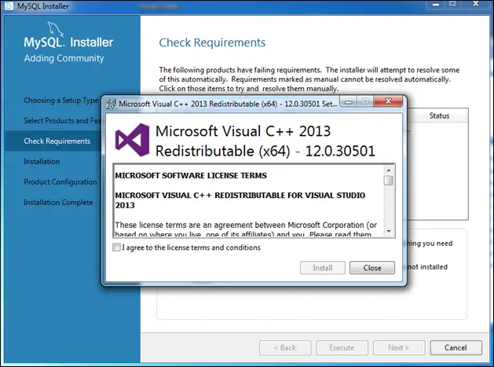
Once you have installed all the dependencies you will see a green check mark before the product name.
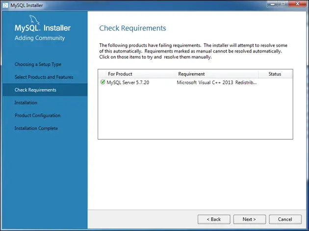
Step 5: Installation.
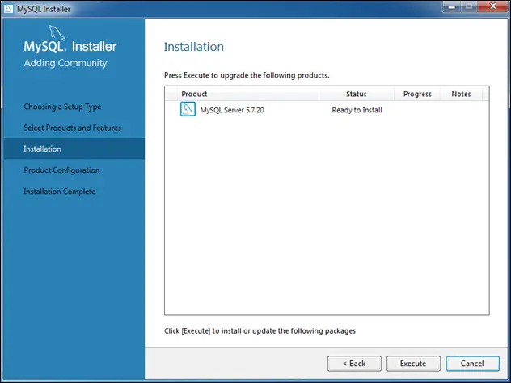
This screen shows the list of products that will be installed. The list only contains MySQL Server because that's what we are installing here. To start the installation process click the Execute button. After successful installation, you will get the following screen.
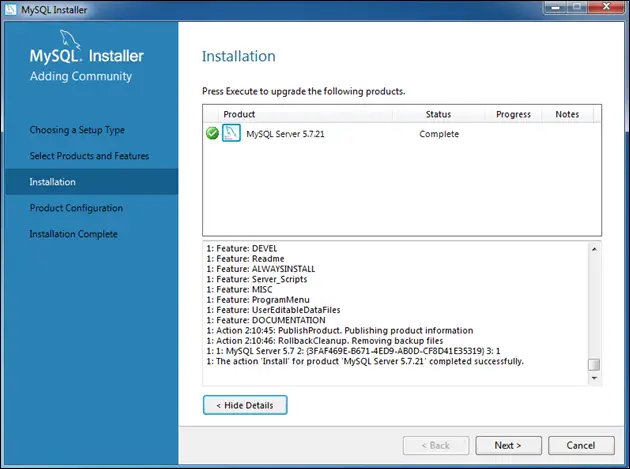
Click Next to proceed.
Step 6: Product Configuration.
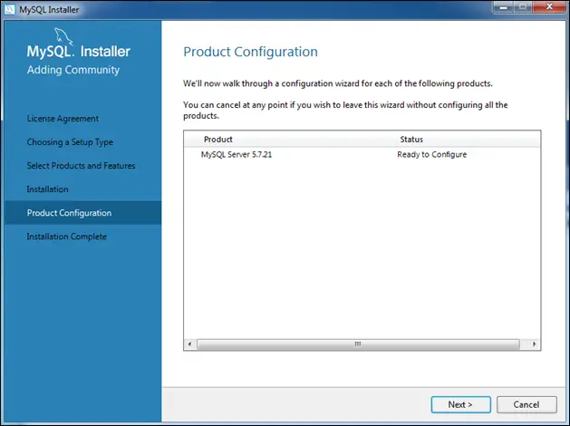
In this part, the installer will configure MySQL Server. Default options are fine, so just click Next on the next on the several screens. After that, you will be prompted for username and password. Set username and password of your choice. You will use this to login into the MySQL server.
You have made through the hard part of the installation phase. In the next several screens accept the default by clicking Next. Finally, close the installer by clicking the Finish button.
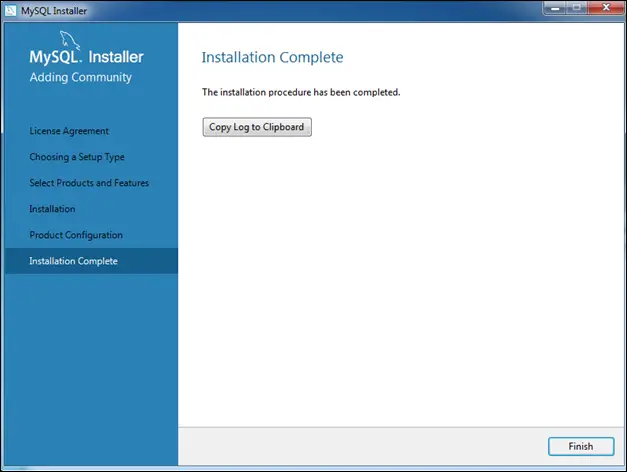
Adding MySQL to PATH Environment Variable in Windows #
MySQL Installer by default doesn't add the mysql.exe to the PATH environment variable. As a result, every time we want to execute mysql.exe we have to specify the full path to it. The mysql.exe resides in the MySQL\MySQL Server 5.7\bin directory. But the path to MySQL directory depends upon the architecture of the application. If you have installed x64 version then it should be in C:\Program Files\. Otherwise, it should be in C:\Program Files (x86). On this system, MySQL is installation is in C:\Program Files\ and the complete path to mysql.exe is C:\Program Files\MySQL\MySQL Server 5.7\bin\mysql.exe.
To add mysql.exe to PATH environment variable follow these steps:
Hit Win+Pause/Break. This will open System Properties Window.
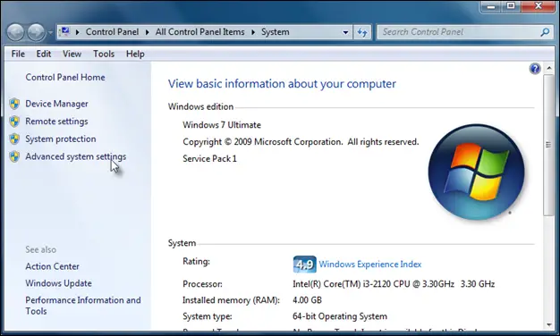
Click on Advanced system settings.
At the bottom of the newly opened window click on Environment Variables.
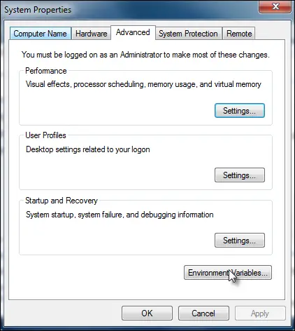
In the new window Select Path environment variable and click Edit.
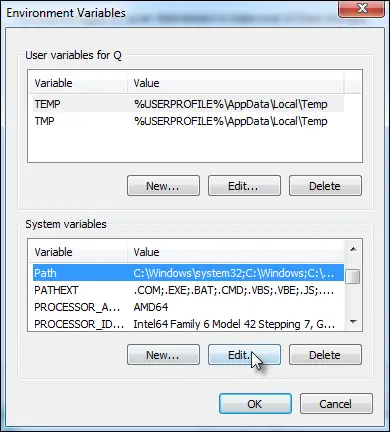
Add
;at the end of the current variable value and appendC:\Program Files\MySQL\MySQL Server 5.7\bin\mysql.exe(the exact may differ depending upon version and architecture of the application). Click OK to save.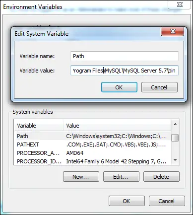
Now start the Command Prompt and enter the following command:
1 2 | C:\Users\user>mysql --version
mysql Ver 14.14 Distrib 5.7.20, for Win64 (x86_64)
|
If you get the MySQL version as shown in the output, then it means everything is working alright and you have successfully installed MySQL Server. To login into the MySQL server use the following command:
C:\Users\user>mysql -u root -p
You will then be asked for a password. On success, on you get the following output:
1 2 3 4 5 6 7 8 9 10 11 12 13 | Welcome to the MySQL monitor. Commands end with ; or \g.
Your MySQL connection id is 51
Server version: 5.7.20-log MySQL Community Server (GPL)
Copyright (c) 2000, 2017, Oracle and/or its affiliates. All rights reserved.
Oracle is a registered trademark of Oracle Corporation and/or its
affiliates. Other names may be trademarks of their respective
owners.
Type 'help;' or '\h' for help. Type '\c' to clear the current input statement.
mysql>
|
To quite the MySQL shell hit \q.
Install MySQL in Debian/Ubuntu/Mint #
To install MySQL on Debian based system like Ubuntu or Mint type the following command:
$ sudo apt-get install mysql-server
If you are using a Redhat based system like Fedora or CentOS use the following command:
$ sudo yum install mysql-community-server
The installer will automatically add the path to MySQL executable to the PATH environment variable so you don't need to do anything.
Testing the Installation #
To the installation run the following command:
1 2 | $ mysql --version
mysql Ver 14.14 Distrib 5.7.19, for Linux (x86_64) using EditLine wrapper
|
If you get the version of MySQL then it means you have successfully installed MySQL server.
After the installation MySQL server will start automatically. At anytime, we can check the status of the MySQL server using the following command:
For Debian/Ubuntu/Mint:
$ sudo service mysql status
For Redhat/Fedora/CentOS:
$ sudo service mysqld status
You can stop the server using the following command:
For Debian/Ubuntu/Mint:
$ sudo service mysql stop
For Redhat/Fedora/Cent OS:
$ sudo service mysqld stop
To restart the server use the following command:
For Debian/Ubuntu/Mint:
$ sudo service mysql start
For Redhat/Fedora/Cent OS:
$ sudo service mysqld start
Installing MySQL on Mac OS #
To download MySQL for Mac OS visit https://dev.mysql.com/downloads/mysql/ and download the DMG archive.
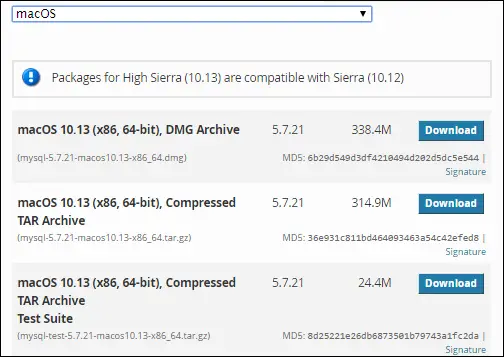
Double-click the installer to start and go through the usual installation process. After the successful installation, you will be provided a temporary password to login into MySQL server. The temporary password is not recoverable so make sure to copy and save it in the safe place.
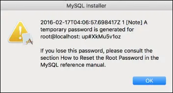
The MySQL installer usually installs the files in the directory named mysql within /usr/local/. Just like Windows, MySQL installer for Mac doesn't add MySQL executable to the PATH environment variable. Consequently, we have to execute MySQL by specifying the full path to it in the terminal.
We are now ready to start the server. Open System Preference and click on the MySQL icon.
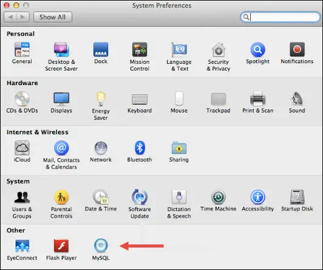
This will open MySQL preference pane.
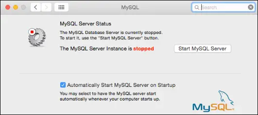
As the screen shows, currently, MySQL server is not running. Click Start MySQL Server button to start the server.
To login to the MySQL server enter the following command in the terminal.
$ /usr/local/mysql/bin/mysql -u root -p
You will then be prompted for a password. Enter the temporary password you copied at the time of installation and hit Enter.
Once you are inside the terminal, change your password using the following command.
ALTER USER 'root'@'localhost' IDENTIFIED BY 'your_new_password'
To quit the MySQL shell enter \q.
Adding MySQL to Path Environment Variable in Mac OS #
To add MySQL executable to the PATH environment variable open .bash_profile and add the following code at the end of the file.
.bash_profile
1 2 3 | #...
PATH="/usr/local/mysql/bin:${PATH}"
export PATH
|
Logoff and then login again for the changes to take effect. To verify the changes try running MySQL with without specifying the full path to it, as follows:
$ mysql --version
If you get the MySQL version then it means you have successfully added MySQL to PATH environment variable. You should now have MySQL server on your Mac OS up and running.
How did this guide work for you? If you are encountering any error let me know in the comments.
Load Comments